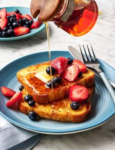

Recipe /Details
French Toast
Category: Category Name
Preparation Time: 30 minutes
Ingredients:
- - Bread
- - Eggs
- - Salt
- - Milk
- - Vanilla Extract
- - Cinnamon
Instructions:
- Step 1: Whisk together 2 eggs, 1/2 cup of milk, 1 tsp of vanilla extract, and a pinch of cinnamon in a shallow dish.
- Step 2: Dip slices of bread (preferably thick slices like brioche or Texas toast) into the batter, coating both
- Step 3: Heat a non-stick skillet over medium heat, add a small amount of butter, and cook the soaked bread slices for 2-3 minutes per side until golden brown.
- Step 4: Serve with maple syrup, powdered sugar, and fresh fruit.